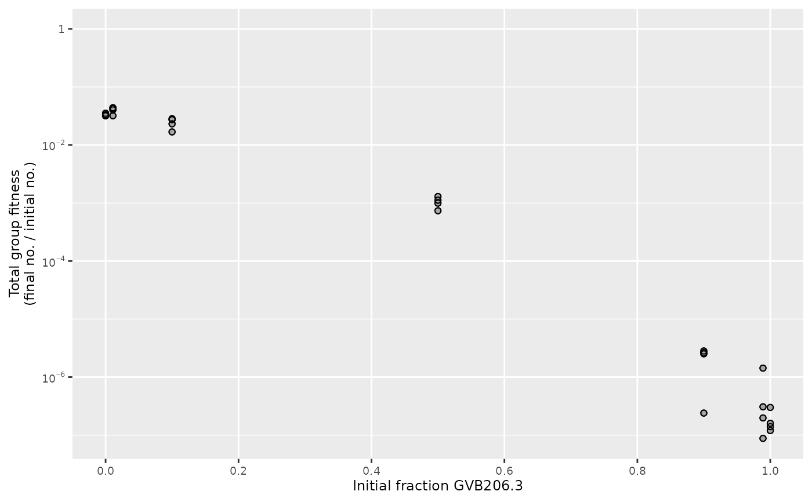
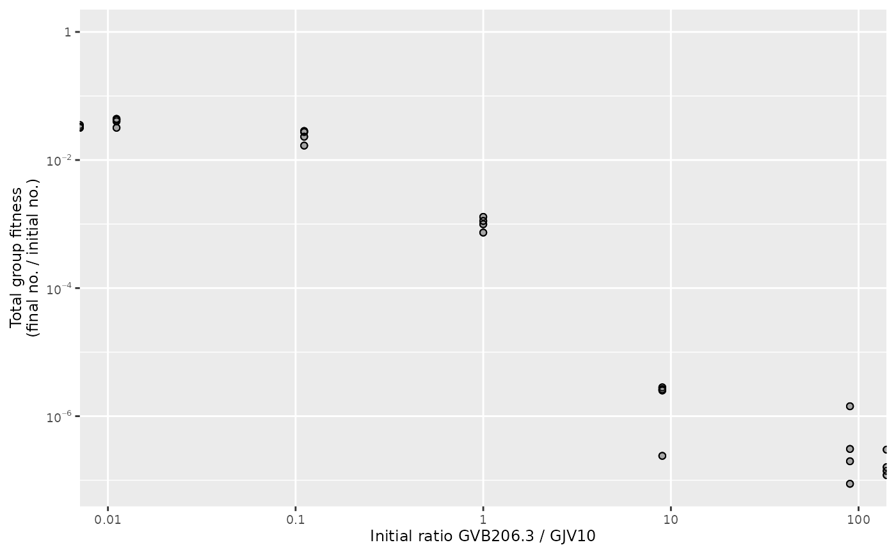
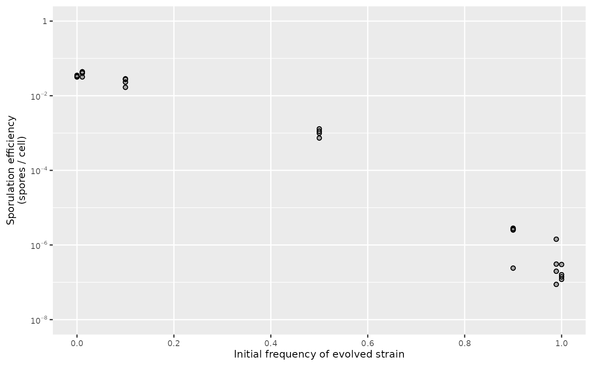

plot_total_group_fitness() draws a plot of total-group fitness as a
function of initial strain frequency
Arguments
- data
Data frame of fitness values and mix frequencies. Accepts data frame extensions like
tibble.- var_names
Named character vector identifying fitness and mixing variables in
data. IfNULL, defaults to column names returned bycalculate_mix_fitness(). See Details.- mix_scale
Determines mixing scale for x axis. When
"fraction"(the default), uses initial frequency of strain A (proportion of total) frominitial_fraction_Avariable. When"ratio", uses ratio of strain A to strain B (on \(\log_{10}\) scale) frominitial_ratio_A_Bvariable.- xlab, ylab
Optional string to replace default axis label
- xlim, ylim
Optional axis limits to replace default
Details
Expects Wrightian fitness data like those returned by
calculate_mix_fitness().
var_names must be a named vector or list that includes the following
elements (shown here with default values):
Examples
fitness_myxo <- calculate_mix_fitness(data_smith_2010, var_names_smith_2010)
plot_total_group_fitness(fitness_myxo)

# Using ratio scale for mix frequencies
plot_total_group_fitness(fitness_myxo, mix_scale = "ratio")
#> Warning: log-10 transformation introduced infinite values.
#> Warning: log-10 transformation introduced infinite values.

# More plot options
plot_total_group_fitness(
fitness_myxo,
ylim = c(1e-8, 1),
xlab = "Initial frequency of evolved strain",
ylab = "Sporulation efficiency\n(spores / cell)"
)
